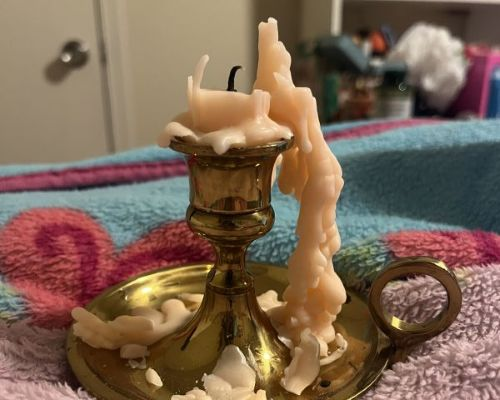

Intriguing Candle (EXAMPLE)
Year: Unknown
Est. Value: $5.50
Country of Origin: Unknown
Description: After hours of slaving away at my computer, I looked to this candle to see it was almost
completely finished, and in an incredibly interesting shape to boot. While this is incredibly mundane, looking at it
makes me feel like an accomplished worker (and makes me wonder if I have secret candle powers).
Audrey's Rating: ★★★★☆